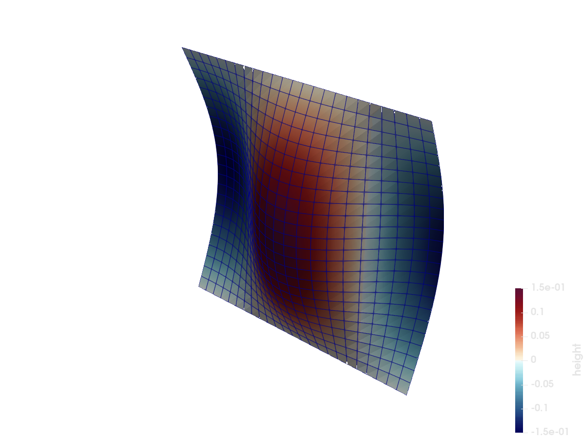

Temporal PolyData: a travelling wave
Port of the test_transient_poly_data.hdf example from the VTKHDF specification: a PolyData opened with temporal = true and written one time step at a time. The geometry is stored exactly once; each step appends only its data arrays, together with per-step read offsets under /VTKHDF/Steps. Passing points/cells to write_timestep would append updated geometry instead.
What you'll learn: how to append time steps with fixed geometry and how to read each step through a timestep view.
The step at t = 0.3 in ParaView, warped by displacement and colored by height:


using VTKHDF
n = 25
nodes = vec(collect(Iterators.product(0:(n - 1), 0:(n - 1))))
points = [(i, j, 0)[d] / (n - 1) for d in 1:3, (i, j) in nodes];
id(i, j) = i + 1 + n * j
quads = vec(
[
MeshCell(PolyData.Polys(), [id(i, j), id(i + 1, j), id(i + 1, j + 1), id(i, j + 1)])
for i in 0:(n - 2), j in 0:(n - 2)
]
);A wave travelling across the flat sheet, written as a scalar and as a displacement vector (warp by it in ParaView to see the wave):
height(t) = [0.15 * sinpi(2 * (x - t)) * sinpi(y) for (x, y) in eachcol(points[1:2, :])]
vtk = vtkhdf_grid("wave", points, quads; temporal = true)
for step_index in 0:9
t = step_index / 10
h = height(t)
write_timestep(vtk, t) do frame
frame["height"] = h
frame["displacement", VTKPointData(), attribute = :Vectors] =
[d == 3 ? h[i] : 0.0 for d in 1:3, i in eachindex(h)]
end
end
close(vtk)Reading the time series back
vtkhdf_open reads temporal files one step at a time through read_timestep:
r = vtkhdf_open("wave")VTKHDFReader{ReadPolyData} (open, temporal, 10 steps)step = read_timestep(r, 5)VTKHDFTimeStep 5/10 (t = 0.4)Each step supports the same accessors as a static file; the data of step 5 is exactly what was written for t = 0.4:
step["height"] ≈ height(VTKHDF.time_value(step))trueThe file stores a single copy of the unchanged geometry, and read_points(step) resolves each step's offsets to it. The caller never needs to know which steps wrote geometry and which reused it:
size(read_points(step)), length(read_cells(step).polygons)((3, 625), 576)close(r)